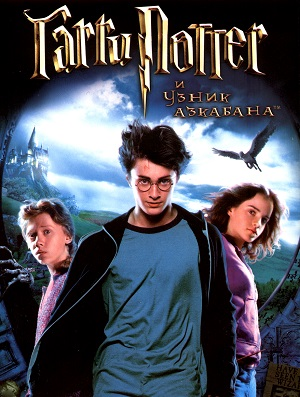

Гарри Поттер и филосовский камень
Одиннадцатилетний мальчик-сирота Гарри Поттер живет в семье своей тетки и даже не подозревает, что он - настоящий волшебник. Но однажды прилетает сова с письмом для него, и жизнь Гарри Поттера изменяется навсегда. Он узнает, что зачислен в Школу Чародейства и Волшебства, выясняет правду о родителях.

Гарри Поттер и Тайная комната
Это вторая книга о приключениях Гарри Поттера. Он снова вступает в отчаянную схватку со злом. На этот раз враг его так силен, что надежды на победу почти нет. В Школе чародейства и волшебства «Хогвартс» происходят тревожные события. Кто-то нападает на учеников школы, и преподаватели подозревают, что это таинственное чудовище, которое скрывается в легендарной Тайной комнате. Гарри Поттер и его друзья разгадывают загадку Тайной комнаты, и теперь Гарри снова предстоит сразиться с лордом Волан-де-Мортом. Сумеет ли он победить на этот раз?

Гарри Поттер и узник Азкабана
Двенадцать долгих лет в Азкабане - мрачной тюрьме волшебного мира - содержался всем известный узник по имени Сириус Блэк. Его обвиняли в убийстве тринадцати человек и считали наследником лорда Волан-де-Морта. И вот он бежал, и из оставленных им следов ясно, что на этот раз убийца поставил целью избавиться от Гарри Поттера. Теперь Гарри Поттер в опасности, даже за стенами своей волшебной школы, даже в окружении друзей - потому что среди них есть предатель, готовый открыть убийце путь в Хогвартс. В нашей библиотеке вы можете бесплатно почитать книгу « Гарри Поттер и узник Азкабана ». Чтобы читать онлайн книгу « Гарри Поттер и узник Азкабана » перейдите по указанной ссылке. Приятного Вам чтения.
